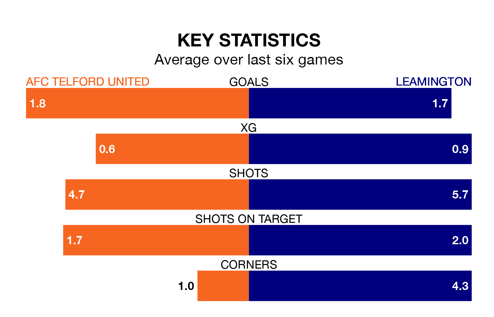

Two of the Southern League Premier Central's meanest defences go head-to-head at the New Bucks Head Ground on Saturday, when Leamington visit AFC Telford United.
Only one side – Needham Market – has conceded fewer goals than Leamington to date: the away side have let in just 30 goals in 36 games.
The Bucks have conceded 32 goals in 37 games, giving them the third tightest back line so far this season.
Telford United are third in the table after 37 games, of which they have won 19 and drawn 11, earning 68 points.
Leamington are two places behind the Bucks in fifth, with 17 wins and 13 draws putting them on 64 points.
In the last 10 years, Telford United and Leamington have played each other on 11 occasions. Telford United won three of them, Leamington two, and they drew six times.
On average, the Bucks scored 1.8 goals and the Brakes 1.8 in those matches.
Their last meeting was on October 28, when they played out a 1-1 draw.
The home side are in good form in the Southern League Premier Central, with four wins and a draw from their last six games.
With three wins and two draws over that period, the Brakes's form is slightly worse – they have taken 11 points from 18, compared to Telford United's 13.
Telford United's last match was on Monday, a 2-1 win against Bromsgrove Sporting.
Leamington beat Halesowen Town 1-0 last time out, on Saturday.
Updated: 16:41 (UTC), 04/04/24